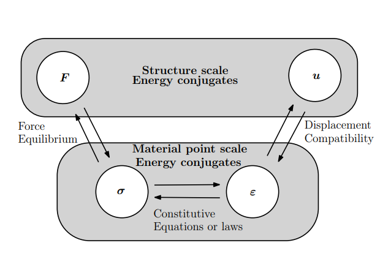
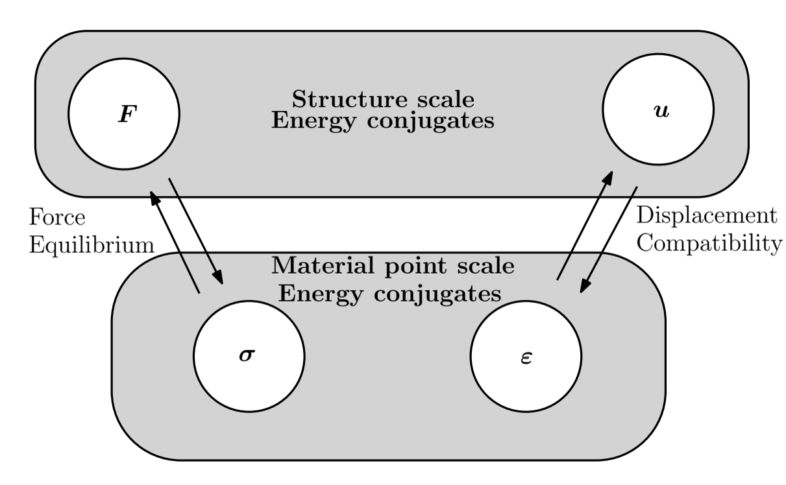

힘·응력·변형률·변위는 어떻게 연결되는가? — Z 다이어그램
평형, 적합조건, 구성관계, 에너지로 구조역학을 하나의 흐름으로 보기
Z 다이어그램, Z Diagram, 역학 문제 풀이, 역학 내비게이션 맵, 힘 응력 변형률 변위, 구조역학, 재료역학, 평형방정식, 적합조건, 구성방정식, 응력 변형률 관계, 힘 변위 관계, 가상일의 원리, 에너지 공액, 가상변위, 내부일 외부일, 유한요소법 기초, 톤티 다이어그램, 고체역학 물리량 관계
English | 한글
Z 다이어그램을 만들게 된 이유
나는 2004년 고려대학교에 부임하면서 학생들에게 역학문제를 좀 더 체계적으로 설명할 방법을 고민했다.
역학에는 식이 많다. 힘도 나오고, 응력도 나오고, 변형률과 변위도 나온다. 평형방정식, 구성방정식, 적합조건도 각각 배운다. 그런데 학생들이 실제 문제를 풀 때 어려워하는 것은 개별 식의 계산만이 아니었다.
지금 역학문제의 어디에 와 있는가? 다음에는 어떤 물리법칙을 써야 하는가? 왜 그쪽으로 가야 하는가?
이 질문에 답할 수 있는 지도가 필요했다.
그래서 만든 것이 Z 다이어그램이다. 나는 이것을 일종의 역학문제 내비게이션 맵으로 사용해 왔다.
\[ F,\qquad \sigma,\qquad \varepsilon,\qquad u \]
라는 네 물리량은 역학문제에서 현재 위치를 보여준다. 그리고 평형, 구성거동, 적합조건은 한 위치에서 다음 위치로 어떻게 이동하는지를 알려준다. 일과 에너지는 서로 다른 수준에서 표현한 역학이 제대로 연결되어 있는지를 확인하는 또 하나의 기준이 된다.
그 이후 내가 강의하는 거의 대부분의 역학 관련 과목에서 이 맵을 사용하고 있다. 재료역학, 구조역학, 유한요소법, 소성론, 파괴역학처럼 과목이 달라지면 세부 식과 모델은 달라진다. 그래도 어떤 식이 평형을 말하는지, 어떤 식이 재료거동을 말하는지, 어떤 식이 변위와 변형을 연결하는지를 Z 다이어그램 위에 놓아 보면 전체 구조가 훨씬 잘 보인다.
연구에서도 마찬가지다. 새로운 문제를 볼 때 힘, 응력, 변형률, 변위를 어떻게 정의할 것인지, 평형과 기구학과 구성가정을 어떻게 구분할 것인지, 그리고 일이나 에너지 관점에서 서로 일관되는지를 정리하는 데 이 맵을 다양하게 사용한다.
따라서 Z 다이어그램은 외워야 할 공식이 아니다. 내가 이 그림을 사용하는 가장 중요한 이유는 다음 질문을 계속 던질 수 있기 때문이다.
지금 이 역학문제의 어디에 있고, 다음 물리량으로 가려면 어떤 원리를 사용해야 하는가?
왜 역학에는 내비게이션 맵이 필요한가?
구조역학을 배우다 보면 이상한 일이 생긴다.
평형도 배웠고, 응력도 배웠고, 변형률도 배웠다. 재료의 구성방정식도 알고 변위와 적합조건도 안다. 각각의 내용은 이해한 것 같은데, 막상 구조물 전체를 놓고 보면 이들이 왜 한 묶음의 역학 문제를 이루는지가 흐릿해질 때가 있다.
Z 다이어그램은 바로 그 연결을 보기 위한 틀이다.
핵심 변수는 네 개다.
\[ F,\qquad \sigma,\qquad \varepsilon,\qquad u \]
여기서 \(F\)는 구조물 수준의 힘, \(\sigma\)는 재료점 수준의 응력, \(\varepsilon\)은 재료점 수준의 변형률, \(u\)는 구조물 수준의 변위다.
중요한 것은 이 네 기호를 나열하는 데 있지 않다. 힘이 어떻게 응력으로 연결되고, 응력이 어떻게 변형률과 연결되며, 다시 변형률이 어떻게 변위와 연결되는가를 하나의 기계적 체계 안에서 보는 것이 목적이다.
기본 구조
Z 다이어그램의 세 연결은 서로 다른 역학 원리가 담당한다.
먼저 힘과 응력은
\[ F \longleftrightarrow \sigma \]
힘의 평형으로 연결된다.
응력과 변형률은
\[ \sigma \longleftrightarrow \varepsilon \]
구성방정식 또는 구성법칙으로 연결된다.
그리고 변형률과 변위는
\[ \varepsilon \longleftrightarrow u \]
변위의 적합조건으로 연결된다.
따라서 전체 흐름은
\[ \boxed{ F \;\longleftrightarrow\; \sigma \;\longleftrightarrow\; \varepsilon \;\longleftrightarrow\; u } \]
가 된다.
각 화살표가 같은 의미의 연결이 아니라는 점이 중요하다. 하나는 평형, 하나는 재료 거동, 하나는 기하학적 적합성을 뜻한다.

두 방향의 해석, 하나의 역학 체계
구조 문제는 어느 쪽에서 시작하느냐에 따라 계산 순서가 달라진다.
외력이 주어졌다면 보통
\[ F \rightarrow \sigma \rightarrow \varepsilon \rightarrow u \]
의 순서로 생각할 수 있다.
주어진 힘으로부터 평형을 만족하는 내부 응력장을 찾고, 그 응력을 구성법칙을 통해 변형률로 바꾸며, 마지막으로 변형률이 적합조건을 만족하도록 변위장을 구한다.
반대로 변위가 주어진 문제라면
\[ u \rightarrow \varepsilon \rightarrow \sigma \rightarrow F \]
로 갈 수 있다.
주어진 변위로부터 적합한 변형률을 구하고, 구성법칙으로 응력을 계산한 다음, 평형을 통해 그 응력장이 요구하는 힘을 얻는다.
둘은 서로 다른 이론이 아니다. 같은 역학 관계를 어느 방향으로 따라가느냐만 다르다.
따라서 Z 다이어그램에서 두 방향에 별도의 이름을 붙일 필요는 없다. 중요한 것은 어디서 시작했고, 어떤 물리 법칙을 거쳐 원하는 물리량에 도달했는가이다.
구조물 수준과 재료점 수준
네 변수는 자연스럽게 두 수준으로 나뉜다.
구조물 수준에서는
\[ (F,u) \]
가 전체적인 힘-변위 응답을 나타낸다.
재료점 수준에서는
\[ (\sigma,\varepsilon) \]
가 국부적인 응력-변형률 응답을 나타낸다.
공학적으로 보면 이것이 매우 중요하다. 구조해석은 힘과 변위만의 문제가 아니고, 재료모델도 응력과 변형률만으로 독립적으로 끝나지 않는다. 구조물의 전역 거동과 재료의 국부 거동이 평형과 적합조건을 통해 서로 연결되어야 한다.
에너지 공액쌍
Z 다이어그램은 에너지 관점에서 보면 더 명확해진다.
구조물 수준에서 힘과 변위는 에너지 공액쌍이다.
\[ (F,u) \]
재료점 수준에서는 응력과 변형률이 또 하나의 에너지 공액쌍을 이룬다.
\[ (\sigma,\varepsilon) \]
상태가 미소하게 변할 때 외부에서 한 일은
\[ dW_{\mathrm{external}} = F\,du \]
로 쓸 수 있다.
재료 내부에서의 일은
\[ dW_{\mathrm{internal}} = \int_V \sigma\,d\varepsilon\,dV \]
로 표현된다.
적절한 가정과 경계조건 아래 기계적으로 일관된 시스템이라면 두 표현은 같은 에너지 전달을 나타내야 한다.
\[ \boxed{ F\,du = \int_V \sigma\,d\varepsilon\,dV } \]
여기서 핵심은 힘-변위와 응력-변형률이 그저 비슷한 모양의 두 표현이 아니라는 점이다. 둘은 에너지적으로 서로 일치해야 한다.
가상일의 원리에서는 무엇이 달라지는가?
표준 Z 다이어그램에는 응력과 변형률 사이에 구성관계가 들어간다. 실제 구조해석에서 재료 거동을 결정하려면 보통 이 관계가 필요하기 때문이다.
그런데 가상일의 원리(principle of virtual work, PVW) 자체는 다르다. 가상일의 원리를 쓰는 순간에는 \(\sigma\)와 \(\varepsilon\) 사이의 구성법칙이 반드시 필요하지 않다.

그림 2에서 \(\sigma\)와 \(\varepsilon\) 사이의 화살표가 빠져 있는 것은 누락이 아니다. 바로 그것이 이 그림에서 봐야 할 부분이다.
기구학적으로 허용 가능한 가상변위 \(\delta u\)를 생각하면 적합조건으로부터 대응하는 가상변형률 \(\delta\varepsilon\)가 생긴다. 한편 정적으로 허용 가능한 힘 \(F\)는 평형을 통해 응력장 \(\sigma\)와 연결된다.
개략적으로 쓰면
\[ F \longleftrightarrow \sigma \qquad\text{and}\qquad \delta u \longleftrightarrow \delta\varepsilon \]
이다.
이 두 쪽은 ’일’을 통해 연결된다.
\[ \boxed{ \delta W_{\mathrm{ext}} = F\,\delta u = \int_V \sigma\,\delta\varepsilon\,dV = \delta W_{\mathrm{int}} } \]
여기서는 하나의 일반화 힘만 있는 단순한 표현을 사용했다. 일반적으로는 체적력, 표면력, 여러 일반화 힘이 외부 가상일에 포함되며, 3차원에서는 응력과 가상변형률이
\[ \boldsymbol{\sigma}:\delta\boldsymbol{\varepsilon} \]
의 형태로 이중수축된다.
여기서 중요한 것은 평형과 적합조건은 서로 독립적인 요구조건이라는 점이다.
평형은 주어진 힘과 응력장이 정적으로 허용 가능한지를 말한다. 적합조건은 주어진 변위와 변형률장이 기구학적으로 허용 가능한지를 말한다. 둘 중 어느 것도 그 자체로 재료가 어떻게 거동하는지는 말해주지 않는다.
그래서 가상일의 원리 자체를 표현할 때는 \(\sigma\)와 \(\varepsilon\) 사이에 구성법칙 화살표가 없어도 된다. 가상변형률은 응력으로부터 얻는 것이 아니라 가상변위로부터 얻는다. 마찬가지로 응력장은 가상변형률을 재료법칙에 넣어 생성하는 것이 아니라 평형조건의 제약을 받는다.
이렇게 독립적으로 허용 가능한 두 장이 외부 가상일과 내부 가상일의 같음으로 만나는 것이다.
문제는 그 다음이다. 실제로 변형체의 경계값 문제를 해결하려면 평형과 적합조건만으로는 충분하지 않다. 실제 응답을 선택하려면 구성법칙이 추가로 필요하다. 그러나 가상일의 원리 그 자체는 기계적 평형과 기구학을 표현하는 원리이지, 응력-변형률 법칙은 아니다.
같은 내용을 파워로 쓰면
같은 그림을 다른 방식으로 읽을 수도 있다. 변위와 변형률 대신 그 시간미분을 생각해보자.
\[ u \rightarrow \dot u, \qquad \varepsilon \rightarrow \dot\varepsilon \]
힘은 속도와 파워 공액이고, 응력은 변형률 속도와 파워 공액이다. 따라서 파워 평형은
\[ \boxed{ P_{\mathrm{ext}} = F\,\dot u = \int_V \sigma\,\dot\varepsilon\,dV = P_{\mathrm{int}} } \]
로 쓸 수 있다.
3차원에서는
\[ P_{\mathrm{int}} = \int_V \boldsymbol{\sigma}:\dot{\boldsymbol{\varepsilon}}\,dV \]
이다.
이 형태를 보면 공액관계가 더 분명해진다. \(F\)와 \(u\)는 \(F\,du\)가 일이기 때문에 에너지 공액이다. 같은 말로, \(F\)와 \(\dot u\)는 \(F\dot u\)가 파워이기 때문에 파워 공액이다.
재료점에서도 \(\sigma\)와 \(\varepsilon\)는 \(\sigma\,d\varepsilon\)의 의미에서 에너지 공액이고, \(\sigma\)와 \(\dot\varepsilon\)는 \(\sigma\dot\varepsilon\)을 통해 파워 공액이다.
따라서 Z 다이어그램은 다음 두 형태로 읽을 수 있다.
\[ (F,u) \quad\leftrightarrow\quad (\sigma,\varepsilon) \qquad \text{through work}, \]
또는
\[ (F,\dot u) \quad\leftrightarrow\quad (\sigma,\dot\varepsilon) \qquad \text{through power}. \]
역학은 같다. 속도 형태는 같은 에너지 전달을 순간적인 파워로 표현한 것일 뿐이다.
선형탄성은 가장 간단한 예다
길이 \(L\), 단면적 \(A\), 탄성계수 \(E\)인 균일한 1차원 봉에 축력 \(F\)가 작용한다고 하자.
힘에서 시작하면
\[ F \rightarrow \sigma \rightarrow \varepsilon \rightarrow u \]
이다.
평형으로부터
\[ \sigma = \frac{F}{A} \]
를 얻는다.
선형탄성에서는
\[ \sigma = E\varepsilon \]
이므로
\[ \varepsilon = \frac{\sigma}{E} = \frac{F}{AE} \]
이다.
적합조건으로부터
\[ u = \varepsilon L \]
이므로 최종적으로
\[ \boxed{ u = \frac{FL}{AE} } \]
를 얻는다.
익숙한 축변위 식이다. 하지만 여기서 중요한 것은 식 자체가 아니다. 그 식이 어떤 역학적 연결을 거쳐 나왔는가가 중요하다.
\[ \boxed{ F \overset{\text{평형}}{\longrightarrow} \sigma \overset{\text{구성법칙}}{\longrightarrow} \varepsilon \overset{\text{적합조건}}{\longrightarrow} u } \]
반대 방향으로 가면
이번에는 변위 \(u\)가 주어졌다고 하자.
적합조건으로부터
\[ \varepsilon = \frac{u}{L} \]
을 얻는다.
구성법칙은
\[ \sigma = E\varepsilon = E\frac{u}{L} \]
을 준다.
마지막으로 평형을 적용하면
\[ F = \sigma A = \frac{EA}{L}u \]
이다.
따라서
\[ \boxed{ F = \frac{EA}{L}u } \]
가 되고, 같은 역학 체계를 반대 방향으로 통과한 셈이다.
\[ \boxed{ u \overset{\text{적합조건}}{\longrightarrow} \varepsilon \overset{\text{구성법칙}}{\longrightarrow} \sigma \overset{\text{평형}}{\longrightarrow} F } \]
1차원 봉에서의 에너지 등가성
같은 선형탄성 봉에서 구조물 수준의 변형에너지는
\[ U_{\mathrm{external}} = \frac{1}{2}Fu \]
이다.
재료 수준에서는
\[ U_{\mathrm{internal}} = \int_V \frac{1}{2}\sigma\varepsilon\,dV \]
로 쓸 수 있다.
균일한 봉이라면
\[ U_{\mathrm{internal}} = \frac{1}{2}\sigma\varepsilon AL \]
이고,
\[ \sigma=\frac{F}{A} \]
및
\[ \varepsilon=\frac{u}{L} \]
을 대입하면
\[ U_{\mathrm{internal}} = \frac{1}{2} \left(\frac{F}{A}\right) \left(\frac{u}{L}\right) AL = \frac{1}{2}Fu \]
가 된다.
따라서
\[ \boxed{ U_{\mathrm{external}} = U_{\mathrm{internal}} } \]
이다.
이 등가성은 문제를 다 푼 뒤 덧붙이는 부가적인 결과가 아니다. 구조물 수준과 재료점 수준이 같은 물리계를 설명하고 있다는 것을 보장하는 일관성 조건이다.
선형역학을 넘어가도 구조는 같다
Z 다이어그램은 선형탄성에만 적용되는 그림이 아니다.
평형관계는 선형일 수도 있고 비선형일 수도 있다. 적합관계도 미소변형을 사용할 수도 있고 유한변형을 사용할 수도 있다. 구성관계에는 비선형탄성, 소성, 손상, 점탄성, 파괴와 관련된 재료모델 등 여러 형태가 들어갈 수 있다.
비선형 문제에서는 익숙한 삼각형 면적
\[ \frac{1}{2}Fu \]
로 에너지를 표현할 수 없는 경우가 많다. 이때 외부일은 보다 일반적으로
\[ W_{\mathrm{external}} = \int F\,du \]
로 써야 한다.
내부일도 마찬가지로
\[ W_{\mathrm{internal}} = \int_V \left( \int \sigma\,d\varepsilon \right)dV \]
처럼 표현할 수 있다.
문제의 세부 식은 달라져도 중심 구조는 변하지 않는다.
\[ \boxed{ \text{평형} \quad+\quad \text{구성거동} \quad+\quad \text{적합조건} } \]
그리고 구조물 수준과 재료점 수준 사이에는 에너지적으로 일관된 연결이 있어야 한다.
Z 다이어그램이 왜 유용한가?
구조역학에서 반복해서 나오는 질문이 있다.
구조물에 가한 힘이 결국 어떻게 변위가 되는가?
답은 하나의 식이 아니다.
힘은 평형을 통해 내부 응력상태와 연결되어야 한다. 응력은 구성모델을 통해 변형률과 연결되어야 한다. 그리고 변형률은 변위장과 적합해야 한다.
반대 방향도 똑같이 가능하다.
그래서 Z 다이어그램은 평형방정식, 구성방정식, 적합방정식이 각각 무엇을 하는지 구분하는 데 유용하다. 동시에 구조물 수준의 전역 변수와 재료점 수준의 국부 변수, 그리고 에너지 공액 변수의 관계를 한 눈에 볼 수 있게 해준다.
재료역학, 구조해석, 유한요소법, 비선형역학, 구성모델링이 처음에는 서로 다른 과목처럼 보이지만, 공학적으로 보면 결국 이 공통된 뼈대 위에서 움직인다.
Z 다이어그램과 Tonti 다이어그램은 무엇이 같은가?
Z 다이어그램을 정리하다 보면 Enzo Tonti의 다이어그램과 닮은 점이 눈에 띈다. 고체역학에서 변위와 변형률은 운동학적 관계로, 응력과 힘은 평형관계로, 변형률과 응력은 구성관계로 연결된다. 힘과 변위, 응력과 변형률이 일을 통해 짝을 이룬다는 점도 공통적이다.
그렇다고 어느 한쪽이 다른 쪽의 원리를 새로 발견했다는 뜻은 아니다. 평형, 적합조건, 구성관계의 구분은 연속체역학 자체의 기본 구조이기 때문이다. 특히 가상일의 원리를 나타낸 Z 다이어그램(그림 2)에서는 응력과 변형률 사이의 구성관계 화살표를 의도적으로 없앴다. 구성법칙을 지정하지 않아도 평형과 적합조건을 각각 진술하고, 가상일로 연결할 수 있음을 보여주기 위해서다.
차이는 무엇을 설명하려는 다이어그램인가에 있다. Tonti의 체계는 물리량을 방향성을 가진 기하학적 요소와 쌍대 구조에 대응시키고, 위상적·평형적 관계와 재료에 의존하는 구성관계를 구분한다. 물리법칙의 기하학적 구조를 체계적으로 파악하려는 접근이다.
반면 내가 만든 Z 다이어그램은 역학문제를 풀기 위한 내비게이션 맵이다. 구조물 수준의 \((F,u)\)와 재료점 수준의 \((\sigma,\varepsilon)\)을 한눈에 놓고, 어느 물리량에서 출발해 어떤 법칙을 거쳐야 하는지, 그 과정에서 일과 파워가 일관되는지를 묻는다.
따라서 Z 다이어그램을 Tonti 이론의 대안으로 설명할 필요는 없다. 두 다이어그램은 같은 역학의 뼈대를 서로 다른 관점에서 보여준다. Tonti는 물리법칙의 기하학적 구조를, Z 다이어그램은 그 법칙들 사이를 오가는 공학적 사고의 흐름을 강조한다.
관련 문헌: Enzo Tonti, The Mathematical Structure of Classical and Relativistic Physics (Birkhäuser, 2013).
공식이 아니라 사고의 틀
Z 다이어그램은 외워야 할 새로운 공식이 아니다.
문제를 풀다가 어느 지점에서든 다음과 같이 물어볼 수 있게 해주는 사고의 틀이다.
- 지금 알고 있는 물리량은 무엇인가?
- 그 물리량은 구조물 수준인가, 재료점 수준인가?
- 다음 물리량으로 넘어갈 때 어떤 법칙을 사용하고 있는가?
- 지금 사용하는 식은 평형인가, 구성관계인가, 적합조건인가?
- 구조물 수준과 재료점 수준에서 에너지 표현은 서로 일관되는가?
이 질문들이 분명해지면 많은 역학 유도가 훨씬 덜 암기식으로 보인다.
문제마다 수학적인 세부 내용은 달라진다.
하지만 사고의 구조는 크게 달라지지 않는다.
정리
Z 다이어그램은 네 개의 기본 역학 변수
\[ \boxed{ F,\quad \sigma,\quad \varepsilon,\quad u } \]
를 힘의 평형, 구성거동, 변위의 적합조건이라는 세 관계로 연결한다.
힘에서 변위로 가면
\[ F \rightarrow \sigma \rightarrow \varepsilon \rightarrow u \]
이고, 변위에서 힘으로 가면 그 순서가 반대가 된다.
동시에
\[ (F,u) \]
와
\[ (\sigma,\varepsilon) \]
는 각각 구조물 수준과 재료점 수준의 에너지 공액쌍이다. 두 수준에서 표현한 에너지는 서로 일관되어야 한다.
가상일의 원리를 통해 보면 한 가지가 더 분명해진다. 평형과 적합조건은 구성법칙과 독립적으로 진술할 수 있다. 정적으로 허용 가능한 응력장과 기구학적으로 허용 가능한 가상변위장은 \(\sigma\)–\(\varepsilon\) 구성관계가 아니라 가상일을 통해 만난다.
속도 형태로 쓰면 같은 내용은 \((F,\dot u)\)와 \((\sigma,\dot\varepsilon)\) 사이의 파워 평형이 된다.
결국 Z 다이어그램의 핵심은 네 개의 기호가 아니다.
평형, 적합조건, 구성거동, 구조물과 재료점의 스케일, 그리고 일과 파워가 하나의 역학 체계 안에서 어떻게 연결되는지를 보는 것이다.